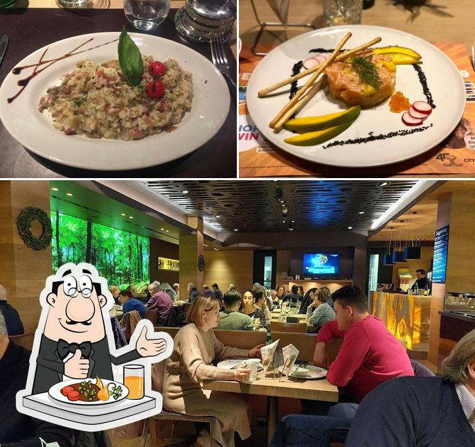

La Maison
Une brasserie au cœur de la forêt.
Am Bësch — « dans la forêt » en luxembourgeois — est une brasserie au décor forestier située au niveau inférieur du centre lifestyle City Concorde, à Bertrange. Dès l’entrée, de grands panoramas de forêt, des surfaces en bois chaud et une végétation abondante font oublier l’agitation du centre commercial. En cuisine, spécialités luxembourgeoises, viandes grillées au four à charbon, pâtes fraîches et poissons de saison composent une carte généreuse et accueillante.
Cuisine généreuse
Spécialités luxembourgeoises, grillades au charbon et pâtes fraîches — une carte ample pour toutes les envies.
Un décor forêt unique
Panoramas forestiers, bois chaud et verdure — une parentèse nature en plein cœur de la ville.
Dans le City Concorde
Niveau -1 du centre de Bertrange — idéal pour un déjeuner ou un dîner après les courses.